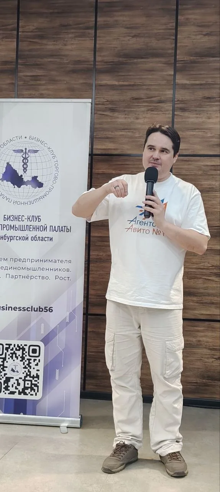
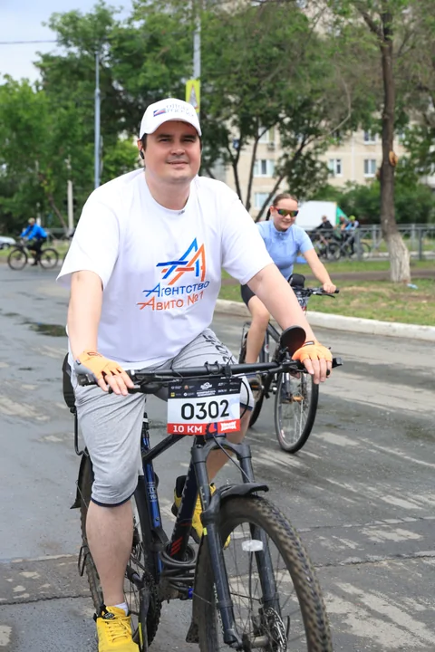
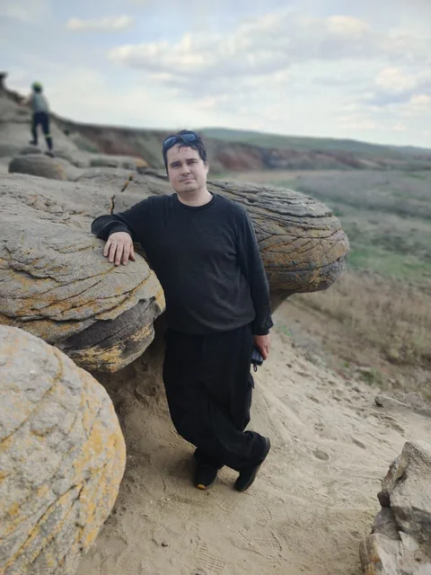
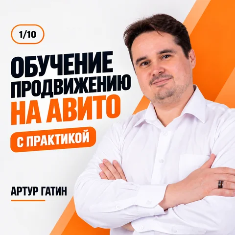
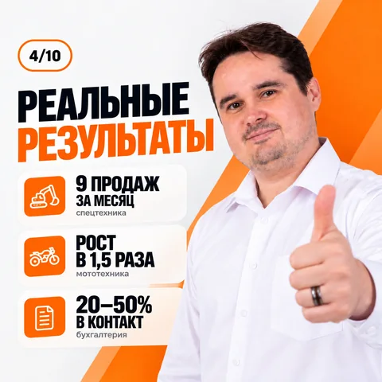
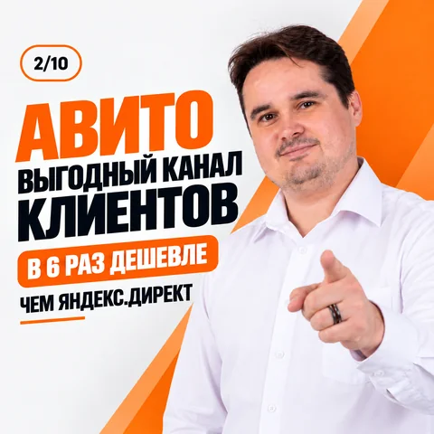

ПОТОК ОБРАЩЕНИЙ
От капель к потоку.
Помогаю превратить редкие обращения с Авито в поток заявок. Для этого работаем со спросом, объявлениями и продвижением.
РЕКЛАМНОЕ АГЕНТСТВО · АВИТО
Я — Артур Гатин, собственник агентства. Помогаю продвигать товары и услуги на Авито: от запуска до регулярного ведения.
Собственник агентства
проектов разобрал и вёл
работаю онлайн с вашим бизнесом
официально, с закрывающими документами
01 / ЛИЧНЫЙ ПОДХОД
Объявление — только часть системы. Важно, что вы предлагаете, кто это ищет и что происходит после первого сообщения.
Я руковожу собственным агентством и работаю с проектами в услугах, найме, промышленном оборудовании, спецтехнике и других нишах. Мои сильные стороны — аналитика, разборы аккаунтов и обучение.
Если вижу, что площадка не подходит вашей задаче, скажу об этом. В работе опираюсь на доступную статистику и понятный план действий.
В 2025 году организовал областную конференцию по Авито для предпринимателей в Оренбурге.
Несколько кадров обо мне
Листайте фото вправо →


ПОНЯТНЫЙ ПОДХОД
Соединяю аналитику, объявления и продвижение в понятный план работы с вашим бизнесом.

ДОРОГА К ВАШЕМУ БИЗНЕСУ
Сначала изучаем спрос и предложение. Затем выстраиваем путь от поиска на Авито до обращения в вашу компанию.
ПОТОК ОБРАЩЕНИЙ
Помогаю превратить редкие обращения с Авито в поток заявок. Для этого работаем со спросом, объявлениями и продвижением.
СИСТЕМНОЕ ПРОДВИЖЕНИЕ
Объединяю тексты, визуалы, размещение и аналитику. Каждый инструмент решает свою задачу и работает на общий результат.
02 / РЕЗУЛЬТАТЫ КЛИЕНТОВ
17 проектов в товарах, услугах и найме. Показываю задачу клиента, свою работу и результат, а цифры дополняю снимками статистики.
Листайте кейсы стрелками или свайпом. Откройте «Подробнее о кейсе», чтобы прочитать историю проекта.
Ворота и маркизы · Крым
28 января – 3 февраля. Покупатели присылали размеры и материал, чтобы получить расчёт изготовления.
Привлекать в Крыму обращения на изготовление и установку ворот и маркиз.
Я продвигал направление на Авито. В обращениях приходила конкретика: размеры, материал и вопрос о стоимости изготовления.
28 января – 3 февраля: 32 контакта по 124,1 ₽. За 5 января – 3 февраля: 98 контактов. Средний доход с клиента, по данным проекта: 30 000 ₽.
Клиент получал запросы, с которыми можно переходить к расчёту заказа: «Нужны ворота такого размера, из такого материала. Сколько это будет стоить?»
Косметология · Иркутск
17 февраля – 18 марта. Расходы на объявление 4 648 ₽; другие направления продвигались отдельно.
Привлекать обращения как на мезотерапию, так и на дорогостоящие косметологические процедуры.
Я продвигал разные направления отдельными объявлениями: мезотерапию, контурную пластику, ботокс и золотые нити.
17 февраля – 18 марта: 41 контакт на объявление о мезотерапии при расходах 4 648 ₽. За тот же период: 29 контактов на объявление о контурной пластике, ботоксе и нитях. Отдельный сводный период 28 февраля – 29 марта: 63 контакта по 152,3 ₽.
Авито давало обращения по нескольким направлениям услуг, включая дорогие процедуры. Результаты отдельных объявлений помогали оценивать каждое направление.
Бурение скважин · Оренбург
17–25 июля. Средняя стоимость обращения 910,5 ₽; работа с проектом продолжалась две недели.
Получить обращения на бурение скважин на воду.
Я запустил продвижение на Авито. Работа с проектом продолжалась две недели.
17–25 июля: 28 контактов по 910,5 ₽. Отдельное объявление за 22–28 июля: 7 контактов из 18 просмотров, конверсия 38,89%.
Уже в период запуска клиент получил поток обращений. Отдельное объявление показало, что предложение способно приводить к контакту почти четырёх из десяти просмотревших именно эту карточку.
Бухгалтерские услуги
За 1–30 апреля получено 199 контактов по 106,1 ₽. По данным клиента, заключены долгосрочные договоры с пролонгацией.
Привлекать клиентов на бухгалтерское сопровождение и долгосрочное сотрудничество.
Я запустил продвижение бухгалтерских услуг на Авито. В первый месяц вышел на конверсию из просмотра в контакт 20,3%.
1–30 апреля: 199 контактов по 106,1 ₽, конверсия 20,3%. По данным клиента, в первый месяц заключены долгосрочные договоры на 69 000 ₽ с пролонгацией.
В первый месяц клиент заключил долгосрочные договоры на сопровождение с пролонгацией.
Готовая мебель · Новосибирск
1 октября – 30 ноября. Средняя стоимость контакта 489,1 ₽, объявления получили 28 295 просмотров.
Привлекать покупателей мебели в Новосибирске.
Я продвигал мебельную компанию на Авито.
1 октября – 30 ноября: 608 контактов по средней стоимости 489,1 ₽. Объявления получили 28 295 просмотров и 2 509 добавлений в избранное.
Компания получила более шестисот обращений за два месяца. Средняя стоимость контакта за весь этот период осталась ниже 500 ₽.
Мототехника · Нижний Новгород и Владимир
По данным клиента, продажи выросли с июля к августу. Стоимость контакта удержали в пределах 1 000 ₽ и добавили новую локацию.
Удержать стоимость контакта в пределах 1 000 ₽ и развивать продажи мототехники.
Я подключился к продвижению, добился участия в программе софинансирования Авито. При содействии менеджера площадки добавил Владимир к исходной локации в Нижнем Новгороде.
Июль: 119 контактов по 999,3 ₽. 1–29 августа: 115 контактов по 924,6 ₽. По данным клиента, продажи выросли с 10 в июле до 15 в августе, то есть на 50%.
Задача по цене контакта выполнена. Вместе с продвижением клиент получил дополнительную географию присутствия и поддержку площадки через софинансирование.
Найм для сети продуктовых магазинов
Саратовская и Ульяновская области. Поток вырос с 783 контактов за сентябрь до 1 738 за 10 января – 10 февраля.
Существенно увеличить поток кандидатов для сети продуктовых магазинов в Саратовской и Ульяновской областях.
Я подключился к продвижению вакансий в сентябре и нарастил поток обращений.
Сентябрь: 783 контакта. 10 января – 10 февраля: 1 738 контактов по 146,4 ₽. По словам руководителя найма, доля закрытых позиций выросла с 80% до 98%.
По словам руководителя найма, сеть вышла на рекордный для неё уровень закрытия позиций.
Найм электромонтажников
7 мая – 11 июня 2026 года. Средняя стоимость контакта 206,9 ₽; объявления получили 14 365 просмотров.
Увеличить поток кандидатов на вакансии электромонтажников.
Я подключился к продвижению в мае и масштабировал поток обращений.
7 мая – 11 июня 2026: 588 контактов по 206,9 ₽. За этот период объявления получили 14 365 просмотров, конверсия в контакт составила 4,1%.
Работодатель получил сотни обращений для дальнейшего отбора кандидатов на специализированные вакансии.
Найм на склады Ozon
124,1 ₽ до подключения и 88,1 ₽ после. За 29 августа – 3 сентября получено 1 263 контакта.
Привлекать кандидатов на складские вакансии с меньшей стоимостью обращения.
Я подключился к продвижению в конце августа.
За 7–21 августа стоимость контакта составляла 124,1 ₽. После подключения, за 29 августа – 3 сентября, получили 1 263 контакта по 88,1 ₽. Снижение стоимости контакта: около 29%.
После подключения стоимость контакта снизилась с 124,1 ₽ до 88,1 ₽. За 29 августа – 3 сентября получено 1 263 контакта.
Найм для пищевого производства
18 июня – 17 июля 2026 года. Продвигал вакансии комплектовщиков, грузчиков, сортировщиков и водителей.
Привлекать сотрудников для производителя и поставщика полуфабрикатов сетевым ресторанам.
Я продвигал складские вакансии комплектовщиков, грузчиков и сортировщиков, а также вакансии водителей категорий B, C и CE.
18 июня – 17 июля 2026: 2 389 контактов по 76,9 ₽. Объявления набрали 52 208 просмотров; конверсия в контакт составила 4,6%.
Клиент получил большой поток обращений сразу по нескольким направлениям найма при средней стоимости контакта ниже 80 ₽.
Медицинское оборудование · Самара
1–21 октября. Перестроил объявления; по данным клиента, Авито стало каналом, который приносил продажи.
Сделать Авито результативным каналом привлечения покупателей медицинского оборудования.
Я перестроил объявления самарской компании по продаже медицинского оборудования.
1–21 октября: 38 контактов по 413,6 ₽. В отдельном периоде 12 октября – 10 ноября: 49 контактов по 449,3 ₽.
По данным клиента, Авито стало источником продаж медицинского оборудования.
Промышленные станки
16 января – 16 апреля. Продвигал продажу станков и услуги с использованием демонстрационного оборудования.
Привлекать покупателей станков и заказы для демонстрационного оборудования, чтобы оно не простаивало.
Для производителя станков с программным обеспечением, резидента Сколково, я объединил два направления: продажу оборудования и услуги с его использованием.
16 января – 16 апреля: 270 контактов по 465,3 ₽. Объявления получили 11 861 просмотр.
Продвижение работало сразу на две бизнес-задачи: продажу станков и привлечение заказов на услуги. Демонстрационное оборудование получило отдельное направление продвижения.
Разработка сайтов и SEO · Москва
С 5 821,7 ₽ за 1–8 июня до 1 342,7 ₽ за 16–22 июня. Отдельное объявление давало обращения по 977,36 ₽.
Снизить стоимость обращения на разработку сайтов и SEO-продвижение.
Я подключился к продвижению услуг клиента на Авито.
До начала работы, 1–8 июня: 5 821,7 ₽ за контакт. 16–22 июня: 17 контактов по 1 342,7 ₽. Отдельное объявление за 17–23 июня: 13 контактов по 977,36 ₽ при конверсии 21,31%.
В сводке аккаунта стоимость контакта снизилась с 5 821,7 ₽ до 1 342,7 ₽ между указанными периодами. Отдельное объявление за 17–23 июня получило 13 контактов по 977,36 ₽.
Репетитор по математике
3 апреля – 3 июня. Свободные часы заняли постоянные занятия с учениками; затем заработали рекомендации.
Привлечь учеников и занять свободные часы в расписании.
Я продвигал индивидуальные занятия по математике на Авито.
3 апреля – 3 июня: 78 контактов. По итогам работы репетитор полностью заполнил свободное время постоянными занятиями с учениками.
Задача была решена в понятном для клиента результате: свободных мест в расписании не осталось. Затем заработали рекомендации, и на момент описания кейса дальнейшее продвижение на Авито уже не требовалось.
Полуприцепы · Продажа спецтехники
По данным клиента, новый канал дал 9 продаж в апреле и 13 в мае при среднем чеке около 4 млн ₽.
Запустить новый канал продаж для компании, которая раньше не работала на Авито.
Я подключился к продвижению в апреле и начал получать обращения с площадки.
По данным клиента: 9 продаж в апреле и 13 в мае. Средний чек около 4 млн ₽. Стоимость привлечения одной продажи около 50 000 ₽ с учётом продвижения, моей работы и зарплаты менеджера.
Новый канал принёс сделки, по данным клиента. В стоимость одной продажи входили продвижение, моя работа и зарплата менеджера.
Юрист для онлайн-бизнеса
По данным клиента, доход первого месяца в полтора раза превысил расходы на продвижение и мою работу.
Запустить Авито как новый источник клиентов на юридические услуги для онлайн-бизнеса.
Я продвигал договоры-оферты, политику конфиденциальности и другие юридические услуги. Для запуска использовал программу софинансирования Авито.
7 марта – 6 апреля 2026: 18 637,34 ₽ собственных средств на площадке и 17 364,66 ₽ использованных бонусов. По данным клиента, в первый месяц заработанная сумма в 1,5 раза превысила расходы на продвижение и мою работу.
После запуска клиенту понадобились помощники для обработки обращений и дальнейшего развития канала.
Банкротство и реструктуризация
11 октября – 10 ноября. Средняя стоимость контакта 236,8 ₽; обращения пришли из 1 669 просмотров.
Привлекать обращения по банкротству и реструктуризации кредитов и долгов.
Я продвигал юридические услуги на Авито.
11 октября – 10 ноября: 175 контактов по 236,8 ₽. Из 1 669 просмотров в контакт перешли 10,5%.
Для направления с длинным циклом принятия решения сформирован поток обращений. Клиент получил потенциальных заказчиков, с которыми можно продолжать работу по сложным юридическим вопросам.
Это результаты отдельных проектов за указанные периоды. Продажи, договоры, доход и закрытие позиций приведены по данным клиентов. Показатели вашего бизнеса зависят от спроса, предложения, бюджета и обработки обращений.
Расскажите, что нужно бизнесу: обращения, продажи, загрузка специалистов или сотрудники. Я предложу подход к продвижению и буду лично контролировать работу над проектом.
МОЯ ПОДАЧА
Мои рекламные материалы о продвижении и обучении работе с Авито. Крупный заголовок, понятное предложение и единый стиль.
Листайте вправо. Нажмите на изображение, чтобы открыть крупнее.



Цифры относятся к отдельным проектам. Результат вашего бизнеса зависит от спроса, предложения, бюджета и обработки обращений.
Обсудить подачу вашего проекта03 / ЧЕМ МОГУ ПОМОЧЬ
Аудит аккаунта, анализ спроса и конкурентов, стратегия и медиаплан.
Аналитика и стратегия 02Тексты объявлений, визуал, профиль и подготовка товарного каталога.
Контент и оформление 03Размещение, автозагрузка, рекламные настройки и работа с бюджетом.
Размещение и продвижение 04Мониторинг, отчётность, обработка обращений, автоответчики и CRM.
Сопровождение04 / ПРОЗРАЧНЫЙ РАСЧЁТ
Запуск оплачивается разово, ведение — ежемесячно. Можно выбрать один этап, оба или отдельную услугу.Помочь с выбором формата?
Несколько аккаунтов или задача за пределами лимитов? Обсудим отдельную смету.
Количество считается в единицах, указанных у услуги. Для ежемесячных работ — за один месяц.
Ничего не нашлось. Попробуйте другое название или очистите поиск.
05 / СЛЕДУЮЩИЙ ШАГ
Расскажите о бизнесе и о том, что сейчас происходит на Авито.
Разбираемся в ситуации, выбираем формат работы и согласуем смету. Закрепляем условия договором.
Запускаем продвижение и корректируем объявления по статистике. Формат и частота отчётов зависят от выбранного пакета или согласованных работ.
Описание услуг или товаров, актуальные цены, преимущества и факты о компании, ваши фото и видео. После обсуждения задачи уточню, каких материалов не хватает. Рекламный бюджет Авито оплачивается отдельно.
При работе по пакетам за переписку, звонки и продажи отвечаете вы или ваши менеджеры. Обработку входящих сообщений, скрипты, автоответчики и CRM можно согласовать как отдельные услуги.
Это два разных этапа. Подготовка и запуск оплачиваются отдельно, если другие условия не согласованы. В калькуляторе можно выбрать запуск, ведение или оба этапа.
Калькулятор помогает оценить порядок расходов. Пакеты имеют стоимость «от». Окончательный состав и стоимость согласуем с учётом ниши, объёма, географии и состояния аккаунта.
Платные размещения, продвижение на Авито, подписки и комиссии сторонних сервисов оплачиваются дополнительно. В стоимость моих услуг они не входят.
Да. В разделе «Отдельные услуги» можно выбрать одну работу. Консультация на 60 минут стоит 5 000 ₽; её содержание и ограничения указаны в калькуляторе.
ПОЛЕЗНОЕ ПЕРЕД СТАРТОМ
Проверьте оформление аккаунта и узнайте, как строится работа с агентством. Материалы можно открыть или сохранить без регистрации.

ДЛЯ САМОПРОВЕРКИ
20 пунктов, которые помогут посмотреть на профиль и объявления глазами покупателя.
Авторский чек-лист. Рекомендации адаптируйте к своей категории и доступным функциям Авито.

ОБ АГЕНТСТВЕ
Пять пакетов и 34 отдельные услуги с ценами из калькулятора: состав работ, лимиты и подготовка к запуску.
Обновлено 17 ноября 2026 года по текущему калькулятору. Рекламный бюджет оплачивается отдельно.
Хотите понять, что улучшить в вашем аккаунте? Напишите о бизнесе и задаче — обсудим подходящий формат работы.
Обсудить мой аккаунтДАВАЙТЕ ОБСУДИМ
Напишите о задаче. С расчётом или просто с вопросом.
Собственник агентства
по продвижению на Авито
Онлайн по всей России
Договор · расчётный счёт · ЭДО
06 / РАБОТАЮ ОФИЦИАЛЬНО
ИП Гатин Артур Милисович
Оренбург · Работаю по всей России